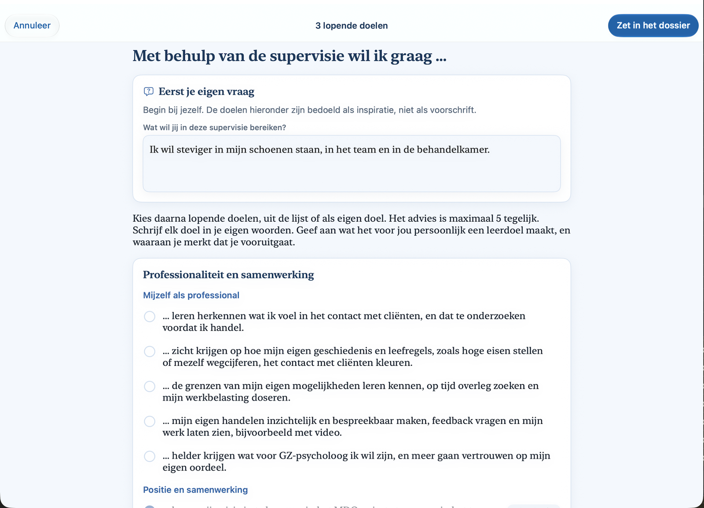
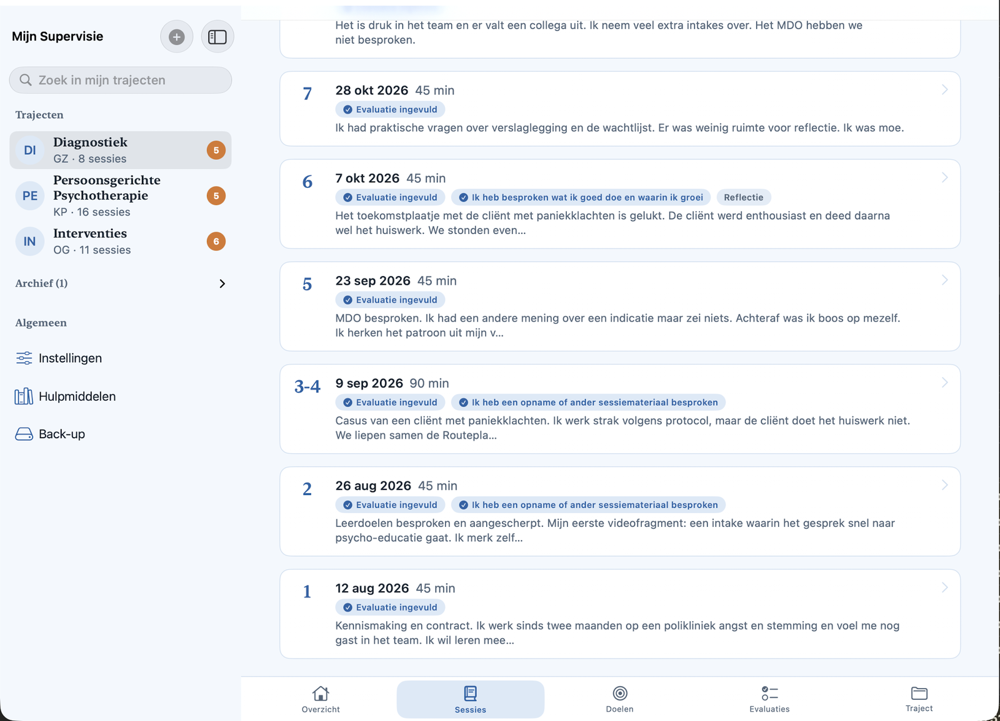
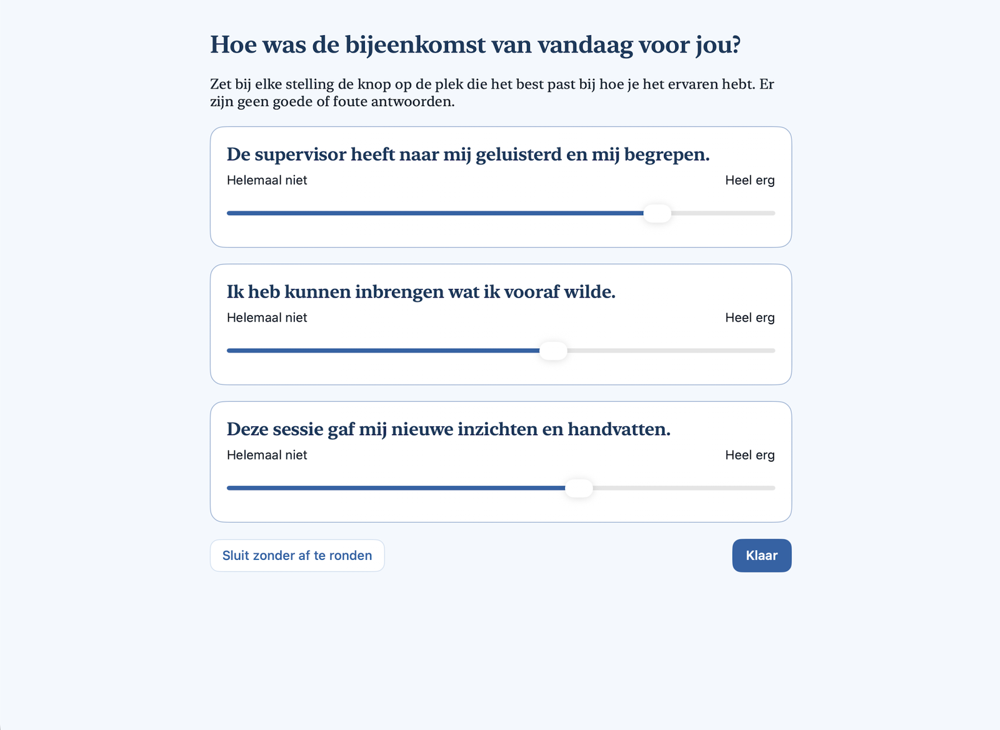

Haal meer uit je supervisie.
Mijn Supervisie houdt je trajecten, leerdoelen, reflecties en evaluaties bij elkaar. Voor iPhone, iPad en Mac. Alles blijft op je eigen apparaat.
Jouw leerruimte, in eigen hand
Supervisie is jouw leerruimte. Toch vervaagt na een paar weken wat je besprak, wat je wilde oefenen en waar je naartoe werkte. Mijn Supervisie helpt je je eigen leerproces in handen te houden. Je legt je doelen vast, houdt bij wat je meeneemt uit elke sessie en ziet hoe je je ontwikkelt. Zo ga je met een duidelijke vraag naar je supervisor.
- Eerst je eigen vraag, daarna doelen uit het profiel van je opleiding
- Een reflectie na elke sessie, die je kunt delen met je supervisor
- Korte evaluatie na elke sessie, met het verloop in een grafiek
- Evaluaties, contract en verklaring als PDF of Word
- Meerdere trajecten naast elkaar
Hoe het werkt
Het ritme van supervisie, in drie stappen.
Voorbereiden
Formuleer in je eigen woorden wat je uit de supervisie wilt halen. Kies daarna lopende doelen uit het profiel van je opleiding, het advies is maximaal vijf tegelijk. Voor elke sessie zie je wat er vorige keer is afgesproken en welke aandachtspunten openstaan.


Vastleggen
Na de sessie schrijf je je reflectie en noteer je wat je meeneemt. Je vinkt aan welke doelen aan bod kwamen en welke vaste aandachtspunten je hebt besproken. Je stuurt je reflectie naar je supervisor of mailt hem als PDF of Word.
Evalueren en terugkijken
Na elke sessie beantwoord je drie korte stellingen met een schuifje. Na verloop van tijd zie je hoe de samenwerking zich ontwikkelt. Bij tussen- en eindevaluaties heb je alles bij de hand en maak je er zelf een document van dat je mailt of bewaart.

Een sessie in Mijn Supervisie
Een kleine, werkende versie van de app, met verzonnen gegevens. Wat je hier invult, wordt nergens bewaard of verstuurd.
Wat het je oplevert
Je dossier is altijd op orde
Sessies, doelen en evaluaties staan klaar wanneer je opleiding erom vraagt. Geen losse formulieren meer.
Zichtbare groei
Je ziet hoe je leerdoelen zich ontwikkelen over maanden, en kunt dat laten zien.
Meer uit elk uur
Wie voorbereid binnenkomt, gebruikt de supervisie voor wat er echt toe doet.
Alles blijft op je apparaat
Geen account, geen server, geen tracking, geen advertenties. Je supervisiegegevens verlaten je apparaat niet, tenzij je zelf iets deelt of mailt. Lees het privacybeleid.
Samen met Supervisiedossier
Elke app werkt los van de andere. Heeft je supervisor de app Supervisiedossier, dan kan die je een uitnodiging sturen. Je traject staat dan klaar met de gegevens van je supervisor, het profiel en de evaluatiemomenten, en je kunt sessie-evaluaties en reflectieverslagen terugsturen. Dat gaat via een bestand dat jullie zelf delen, niet via een server.
Naar Supervisiedossier"Ik wilde dat supervisie minder over formulieren zou gaan, en meer over het vak."
Voor iedereen in opleiding die van supervisie een echte leerruimte wil maken.
Eenmalige aankoop, geen abonnement.